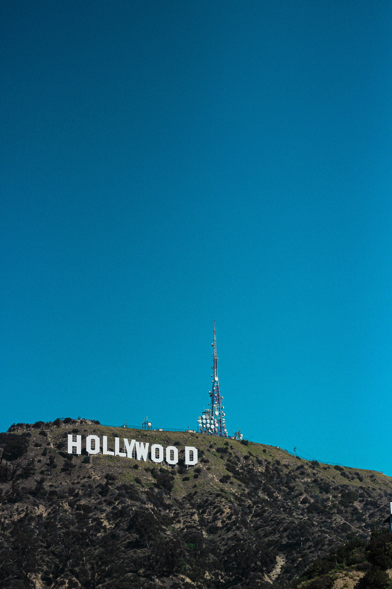

Fun Facts about the US movie industry
The movie "In Old California" was the first hollywood movie to ever be made.This was in the done in the year 1910.
The famous Hollywood sign in Los Angels was earlier spelt as "Hollywoodland" in 1923.
Hollywood was created by a German named Carl Laemmle.
Welcome to the United States of America! Below are 5 events/festivals that we think are important and some great movie collection for each of them. We completely agree that narrowing down the movie to watch is always a hard task. We have narrowed them down for you and we hope you enjoy the collection!
Events/Festivals
- New Year
- Independence Day
- Valentines Day
- Superbowl Sunday
- Christmas